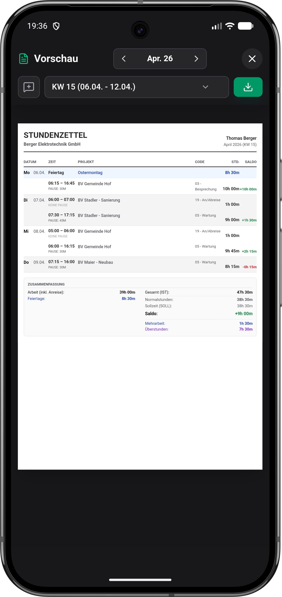
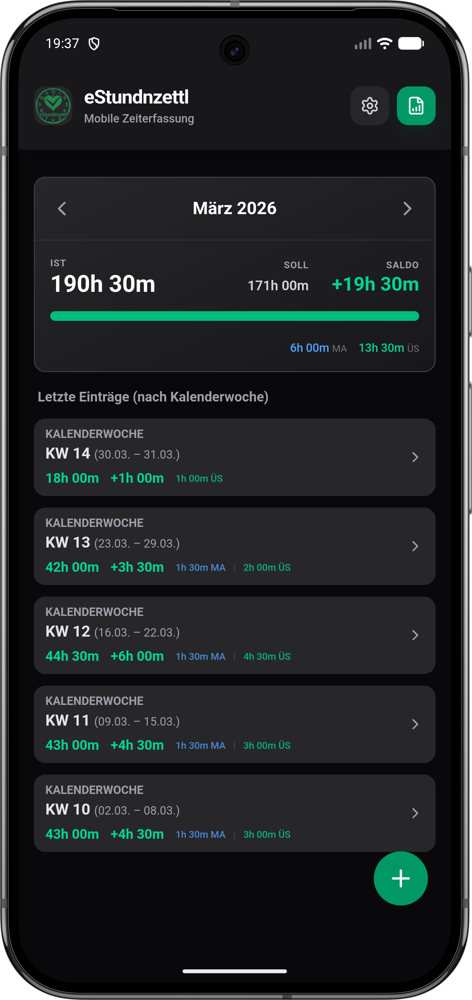
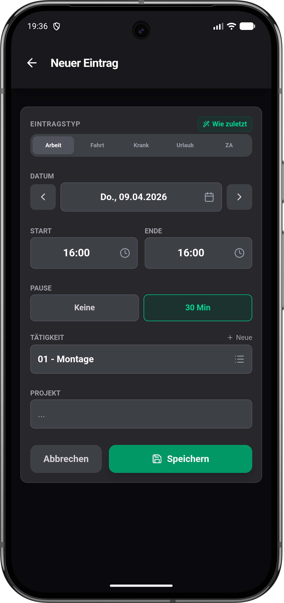

Rein damit.
Weiterarbeiten.
Start, Ende, Pause, Tätigkeit und Projekt. Manuell eintragen, den letzten Eintrag übernehmen oder den Live-Timer nutzen.
Dein Stundenzettel. Nur einfacher.
Du hast genug zu tun. Erfasse Stunden, Fahrten und Belege direkt am Handy – und verschick deinen fertigen Stundenzettel als PDF.
Kein Abo. Keine Werbung. Kein App-Konto.


Echte App. Beispieldaten.
Für deinen Arbeitsalltag
Auf der Baustelle, unterwegs oder im Büro: Behalte deine eigenen Zeiten im Griff. Ohne Excel am Abend. Ohne Zettel im Handschuhfach.
Start, Ende, Pause, Tätigkeit und Projekt. Manuell eintragen, den letzten Eintrag übernehmen oder den Live-Timer nutzen.
Arbeitsstunden, Saldo, Urlaub und Zeitausgleich im Blick. Dein Arbeitszeitmodell gibt den Takt vor – nicht umgekehrt.
Monat oder Kalenderwoche auswählen, Vorschau prüfen und teilen. Per E-Mail, WhatsApp oder als Datei – mit Dokumenten zum Eintrag.
Vom ersten Eintrag bis zum PDF
Kein neues Bürokratie-Hobby.
Ein Werkzeug, das dir eines abnimmt.
Arbeitszeitmodell und Name einstellen. Oder erst mit Demo-Daten reinschnuppern – ganz ohne Anmeldung.
Stunden und Fahrten erfassen, Fotos oder Regiescheine anhängen. Urlaub, Krank und Zeitausgleich haben ebenfalls ihren Platz.
PDF für Woche oder Monat erstellen und direkt weitergeben. Auf Wunsch mit deinem Firmenlogo und einer eigenen Fußzeile.
Kein Mock-up-Versprechen
Echte Ansichten der Android-App.
Mit Beispieldaten statt deinen Daten.
Zeit, Pause, Tätigkeit und Projekt.

Stunden, Saldo und Wochenübersicht.
Als PDF prüfen, teilen oder speichern.
Die App gibt’s auf Deutsch und Englisch, im hellen oder dunklen Design und mit Material You.
Einfach anfangen. Bei Bedarf mehr.
Vollzeit, Teilzeit, Vier-Tage-Woche oder eigener Plan. Regionale Feiertage für Österreich, Deutschland und die Schweiz sind dabei.
Fahrtzeiten, Projekte, Tätigkeitscodes und Nächtigungen erfassen. Fotos, Lieferscheine und Regiescheine bleiben beim passenden Eintrag.
Im Hausmasta-Modus findest du zusätzliche Einstellungen, etwa Nextcloud, PDF-Layout und automatische PDF-Archive.
Deine Zeit gehört dir. Deine Daten auch.
Deine Arbeitszeiten liegen auf deinem Gerät – nicht auf einem Server des Entwicklers. Keine Werbung, kein Analyse-Tracking und kein App-Konto.
Zur DatenschutzerklärungOptional in einen lokalen Ordner, zu Google Drive oder in deine Nextcloud. Du entscheidest, ob und wohin gesichert wird.
Dokumentdateien werden bis insgesamt 15 MB je Backup aufgenommen, neueste zuerst. Größere Sammlungen bitte zusätzlich sichern.
Kurz nachgefragt
Die App ist kostenlos. Keine Werbung, kein Abo und keine Funktionen hinter einer Bezahlschranke. Wenn du die Entwicklung unterstützen möchtest, findest du auf GitHub eine freiwillige Spendenmöglichkeit.
Für die Zeiterfassung brauchst du weder Internet noch ein App-Konto. Internet ist für den Download, Updates und optionale Cloud-Backups nötig. Google Drive und Nextcloud verbindest du nur, wenn du sie nutzen möchtest.
Für Menschen, die ihre eigenen Arbeitszeiten dokumentieren und einen Stundenzettel abgeben möchten – etwa im Handwerk, auf Montage, im Außendienst oder im Büro. eStundnzettl ist eine persönliche Zeiterfassung, keine zentrale Personal- oder Teamverwaltung.
Ja. Erstelle einen Wochen- oder Monatsbericht als PDF, prüfe die Vorschau und teile ihn über eine passende App, zum Beispiel per E-Mail oder WhatsApp. Du kannst ihn auch als Datei speichern. Auf Wunsch kommt dein Firmenbriefkopf dazu.
eStundnzettl läuft auf Android ab Version 8.0. Die Oberfläche ist auf Deutsch und Englisch verfügbar. Feiertags- und Berechnungseinstellungen gibt es für Österreich, Deutschland und die Schweiz sowie einen neutralen und einen eigenen Plan. Eine iPhone-Version gibt es derzeit nicht.
Arbeitszeitmodelle und Berechnungsregeln lassen sich einstellen. Prüfe sie passend zu deinem Vertrag und deiner Region. Die App ersetzt keine arbeitsrechtliche Beratung und keine Prüfung durch deine Lohnverrechnung.
Den Quellcode, die aktuellen APK-Releases und die Möglichkeit, Fehler zu melden, findest du auf GitHub. Fragen und Feedback kannst du auch an project@kainer.co.at schicken.
Aus der Steiermark. Für deinen Alltag.
Probier’s aus. Der nächste Stundenzettel wartet eh schon.